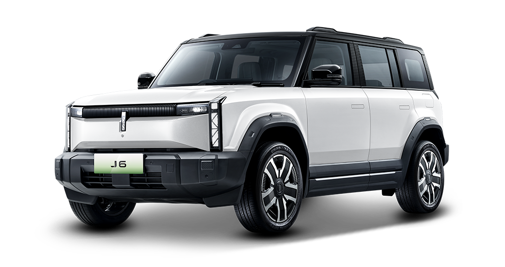
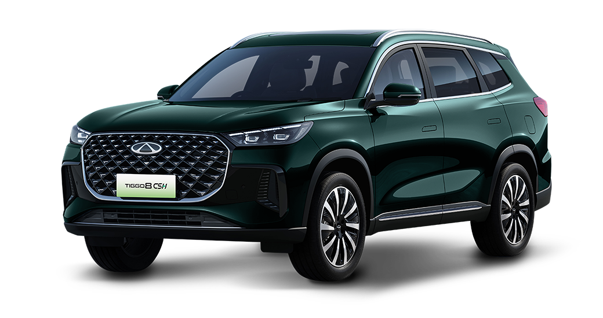

BATTERY ELECTRIC VEHICLE01
J6
Kenali pilihan mobil listrik Chery untuk perjalanan Anda.
Tanyakan J6 ↗CHERY BINTARO · PERSONAL CONSULTATION
Temukan Chery yang sesuai dengan keseharian Anda. Mulai dari mengenal model hingga merencanakan test drive, konsultasikan langsung bersama Ivan.

JELAJAHI CHERY
Pilih model yang ingin Anda kenal lebih dekat. Tanyakan varian, ketersediaan unit, dan penawaran terkini langsung kepada Ivan.
Kenali pilihan mobil listrik Chery untuk perjalanan Anda.
Tanyakan J6 ↗
Jelajahi pilihan hybrid untuk kebutuhan mobilitas Anda.
Tanyakan TIGGO 8 CSH ↗Kenali lebih dekat pilihan SUV bermesin bensin Chery.
Tanyakan TIGGO Cross ↗Foto dan penamaan model mengacu pada Chery Indonesia. Varian, harga, promo, serta ketersediaan unit dikonfirmasi saat konsultasi.
MULAI DARI PERCAKAPAN
Ingin mengetahui pilihan model, meminta penawaran, atau merencanakan test drive? Sampaikan kebutuhan Anda melalui WhatsApp.
Sales Supervisor · Chery Bintaro
WE’RE HIRING
Senang membangun relasi dan punya semangat mencapai target? Mari bergabung bersama tim Chery Bintaro.
Lampirkan CV dan ganti “Nama Lengkap” pada subjek email dengan nama Anda.
INFORMASI SEBELUM MENGHUBUNGI
Hubungi Ivan melalui WhatsApp untuk meminta penawaran sesuai model dan varian yang diminati. Harga dan promo akan dikonfirmasi saat konsultasi.
Pilih “Permintaan jadwal test drive” pada formulir konsultasi dan tuliskan waktu yang Anda inginkan. Ivan akan mengonfirmasi unit, lokasi, dan jadwal melalui WhatsApp.
Kirim CV ke ivaneriyanto26@gmail.com dengan subjek “Sales Consultant – Nama Lengkap”. Informasi seleksi dapat ditanyakan melalui WhatsApp.
Formulir ini menyusun pesan WhatsApp di perangkat Anda. Website tidak menyimpan isian formulir. Pesan baru terkirim setelah Anda menekan tombol kirim di WhatsApp.